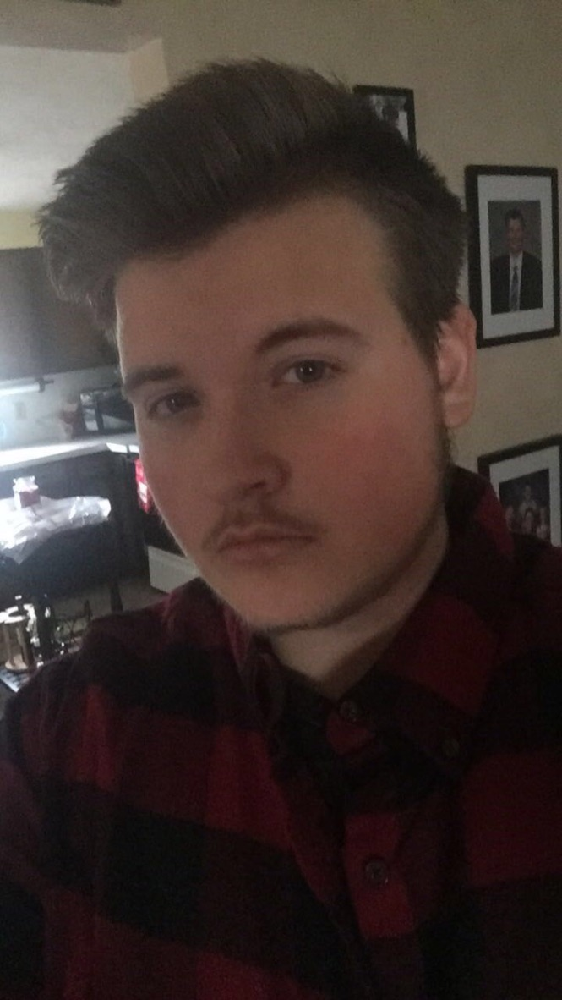
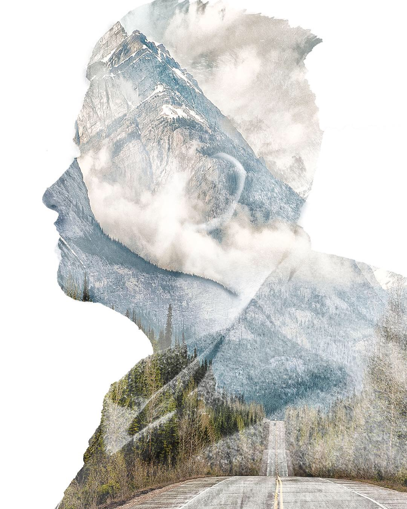
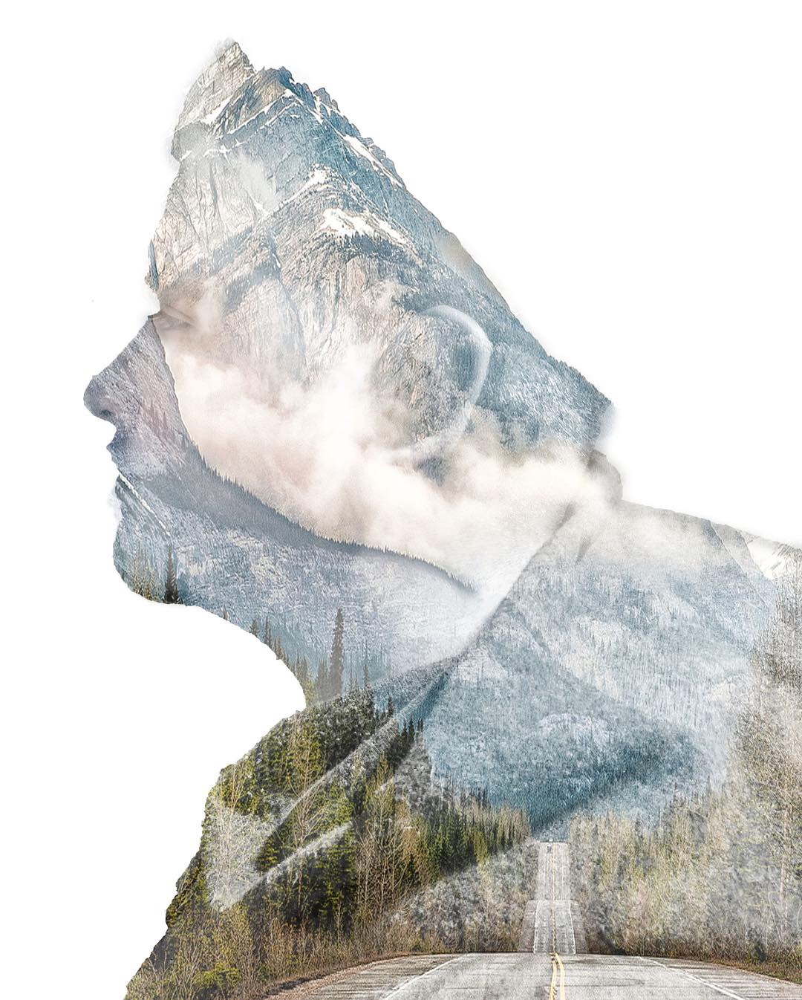
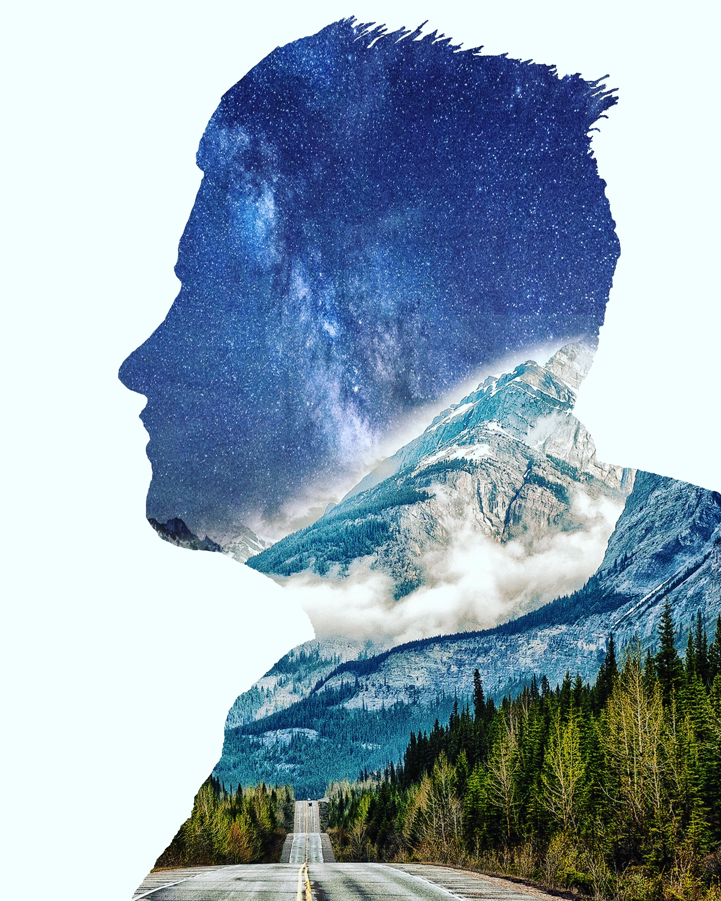
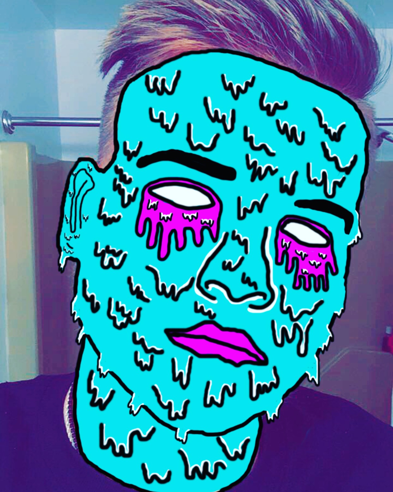
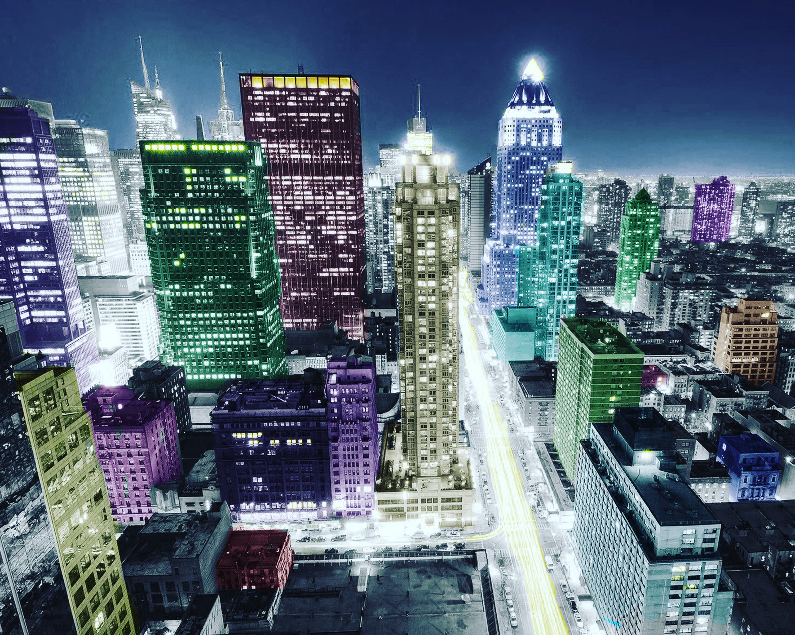

About Me
Hey there, My name is Ethan Kubistek and I'm a CSET student at Thaddeus Stevens College of Technology. This is my page and you're welcome to take a look.
Hey there, My name is Ethan Kubistek and I'm a CSET student at Thaddeus Stevens College of Technology. This is my page and you're welcome to take a look.
I'm on Github, Linkedin, and I also have an email
I enjoy playing on my PC, I love to hang out with people in calls or in real life, and just play some games. I also enjoy using photoshop to mess around with pictures of myself. I occasionally watch some hockey in my free time too.
    